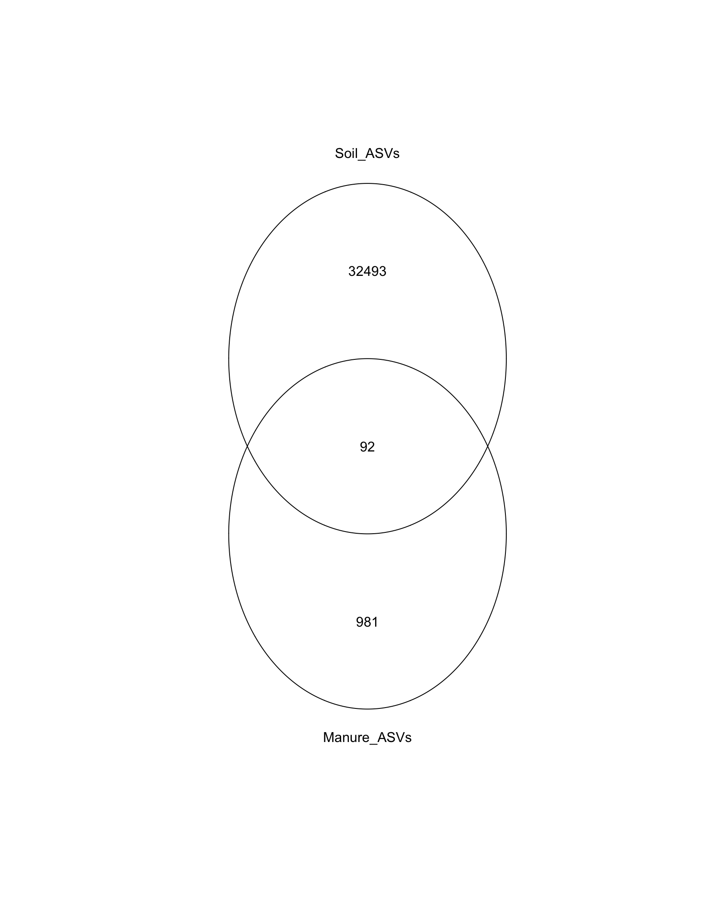
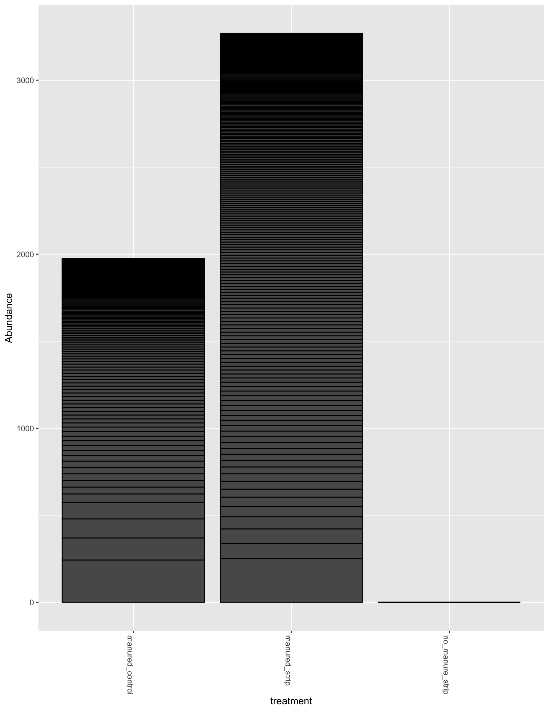

# source functions
source("code/functions.R")phy <- readRDS("./data/RDS/worle_with_meta.RDS")
colnames(sample_data(phy))## [1] "id" "PI" "matrix"
## [4] "plot" "treatment" "day"
## [7] "depth" "in_plot_location" "block"
## [10] "runoff_sample"unique(phy@sam_data$day)## [1] "0" "b" "t0" "t14" "t2" "t21" "t42"hist(sample_sums(phy), breaks = 100)manure_otus <- subset_samples(phy, matrix == "manure") %>%
filter_taxa(function(x) sum(x) >= 1, T) %>%
otu_table() %>%
rownames()
cc <- subset_samples(phy, treatment == "no_manure_strip" | day == "b") %>%
filter_taxa(function(x) sum(x) >= 1, T) %>%
otu_table() %>%
rownames()
vvv_diag <- venn(list("Manure_ASVs" = manure_otus, "Soil_ASVs" = cc))
manure_persitors <- attr(vvv_diag, "intersections")$Manure_ASVs # Check reads, I was under the impression that all samples had at least 10k
phy.OTU <- OTU_to_column(phy)
manure.phy <- subset_samples(phy.OTU, matrix == "soil") %>%
filter_taxa(function(x) sum(x) >= 1, T)
persistors.phy <- subset_taxa(manure.phy, OTUID %in% manure_persitors) %>%
filter_taxa(function(x) sum(x) >= 5, T)
persistors.phy## phyloseq-class experiment-level object
## otu_table() OTU Table: [ 95 taxa and 804 samples ]
## sample_data() Sample Data: [ 804 samples by 10 sample variables ]
## tax_table() Taxonomy Table: [ 95 taxa by 7 taxonomic ranks ]min(taxa_sums(persistors.phy))## [1] 5max(taxa_sums(persistors.phy))## [1] 1164plot_bar(persistors.phy, x = "treatment", y = "Abundance")